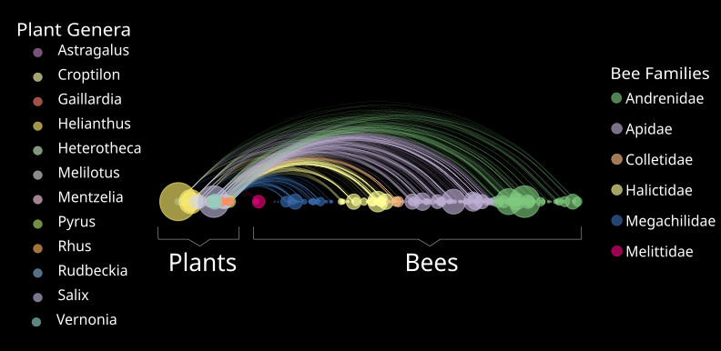

With seven years of experience working on multi-million dollar reseach projects, I understand how to leverage data into products and productivity.
Generalized Linear Models, Spatially Explicit Regression
Map Production, Geospatial Databases, and Data Integration
Dynamic and interative web applications made with Rshiny
Using research to frame problems, and data to reveal patterns
Technically savvy scientist with a record of fluidly working on multiple large projects. Understands how to leverage data into products and productivity. Incorporates office skills to organize, schedule, and communicate effectively.
| Research | Communication | Programming |
|---|---|---|
| Regression analyses | Data Visualization | R |
| Multidimensional scaling | Map production | Arc Model Builder |
| Data quality control | Web Applications | VBA |
| Knowledge Management tools | Spanish - fluent | CSS/HTML/JS |
Biosurveillance Scientist - Accenture Federal Services - Washington D.C
2016-Present
Lead geospatial analysis efforts focusing on assessing the risk of emerging infectious disease to the United States.
Produce data visualizations used in in-depth reports, communications materials, and congressional/leadership briefings.
Moderate inter-agency expert knowledge exchange forum with critical partner agencies.
Write flexible programs to parse unstructured text and image based data sources for use in qualitative and quantitative analysis. This improves reproducibility of analysis and facilitates data sharing.
Application Developer - Free Lance - Washington D.C.
2015-2016
Developed an interactive map of peace projects across Latin America (currently focused on México) for a graduate student at Georgetown University’s School of Foreign Service. The application depends on the leaflet plugin and the dplyr package to display projects of interest.
Developed a mobile ready time sheet application for a small business in Wisconsin. This allows the client to cut costs by moving to open source accounting software.
(Pro-Bono) Developed python applications for automating image processing tasks for the National Museum of Natural History Entomology Department. These significantly reduced transcription error rates and the processing time per-specimen.
GIS Specialist and Spatial Analyst - University of Colorado Museum of Natural History - Boulder, Colorado
2015
Research Assistant - University of Colorado Boulder - Boulder, Colorado
2013-2015
Research Technician - University of Wisconsin Madison - Madison, Wisconsin
2008-2013
Master of Arts Ecology and Evolutionary Biology
University of Colorado Boulder - 2013-2015
Bachelor of Science Evolutionary Biology, Spanish Linguistics, Zoology
University of Wisconsin Madison - 2006-2011
ICAgile Certified Professional
Accenture Agile Institute - 2016
I am always looking for new and interesting projects. Email me if you think I would be a fit for your team!
262.389.8518
To help inform pollinator plantings in the western Great Plains, I built a pollination network for the region using museum records from GBIF. This network identifies plant species that are essential to network robusticity, and the species that increase diversity by supporting specialist bees.

Bee Behavior Experiment filmed by Travis Bildahl on Vimeo.